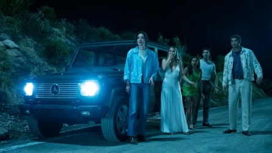
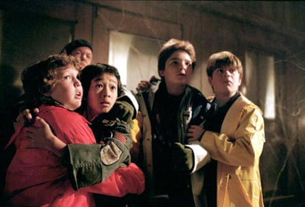
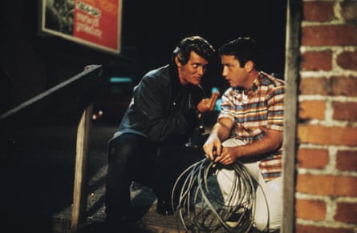
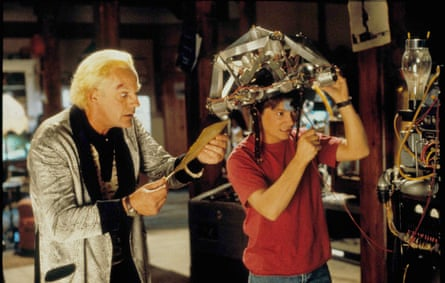
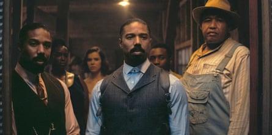
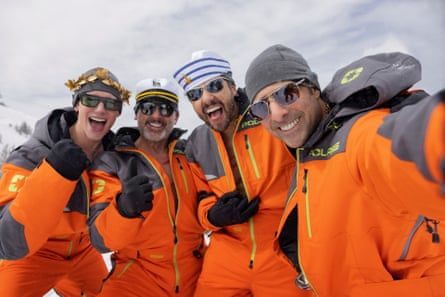

On Monday, the director of the new Jurassic Park movie explained his aim for the seventh film in the series. Innovation it was not. Rather, said Gareth Edwards, it was karaoke. To prepare, he binged Steven Spielberg clips on repeat, hoping to accomplish genre cloning.
“I was trying,” he told BBC’s Front Row , “to make it feel nostalgic. The goal was that it should feel like Universal Studios went into their vaults and found a reel of film, brushed the dust off and it said: Jurassic World: Rebirth.
“And they’re like: ‘What’s this? We don’t remember doing this!’ I wanted it to feel like a film they’d discovered from the early 90s.”
Time travellers from that period to the present day would be forgiven for wondering whether their DeLorean was on the blink. Not only are Oasis and Pulp soundtracking the summer with hits from Britpop’s golden years, but film-makers, too, are – to paraphrase another mid-90s cultural touchstone , the Ferrero Rocher ads – really spoiling us.
In a fortnight, we return to the scene of the crime of 1997’s ripe slasher sensation I Know What You Did Last Summer for a new movie boasting exactly the same title, as well as key cast Jennifer Love Hewitt and Freddie Prinze Jr – whose very names act as a Smash Hits madeleine. The 2025 film continues the events of 1998’s I Still Know What You Did Last Summer but – purists take note – ignores 2006’s now non-canonical I’ll Always Know What You Did Last Summer. Mind your adverbs.
The 2025 version of I Know What You Did Last Summer will be in cinemas later in July.Photograph: Sony Pictures
August brings The Naked Gun, with Liam Neeson slipping into the Swiss army shoes vacated by Leslie Nielsen’s bumbling police lieutenant in 1994, as well as a remake of 1989’s The War of the Roses, this time called The Roses, with Olivia Colman locked in marital battle with Benedict Cumberbatch.
Jamie Lee Curtis and Lindsay Lohan return for a very belated sequel to their 2003 bodyswap comedy Freakier Friday, while currently marauding through cinemas is 28 Years Later, Danny Boyle’s reanimation of the zombie horror series he started in 2002.
Still hanging on strong across multiplexes, meanwhile, is Final Destination: Bloodlines, the first new instalment for 14 years of the franchise that’s been confirming people’s worst fears about tanning beds, log trucks and acupuncture since the turn of the century.
Also on offer during the holidays are a rebooted Superman, a new Fantastic Four movie and assorted anniversary reissues including The Goonies (which turns 40), Harry Potter and the Goblet of Fire (20), Human Traffic (26), Sense and Sensibility (30) and Spinal Tap (41).
Hollywood, it appears, is stuck on repeat, sucked with an ever-more deafening gurgle into a death cycle of creative bankruptcy desperately presented as comfort food. That this packaging strategy works is thanks in part to the dire state of the world beyond the cinema; audiences are really eager for escape.
It is 40 years since The Goonies, directed by Richard Donner, was released.Photograph: Warner Bros/Allstar
“It makes me think of that Gil Scott Heron quote ,” says the veteran film journalist Steven Gaydos. “‘Americans want to go back as far as they can, even if it turns out to be only last week. Not to face now or the future, but to face backwards’.”
That they seem to be spending a lot of time in 1994 is because those people making decisions in Hollywood, and commissioning others to execute them, came of age around this time (Edwards turns 50 next weekend). They are therefore particularly keen to relive a more innocent pre-smartphone era – as well as introduce it to their offspring.
Cinemas actively encouraging this sort of indulgence is not new. George Lucas’s breakthrough, American Graffiti (1973), harked fruitfully back to his own youth, just as Back to the Future (1985) – which Spielberg executive produced – lucratively teleported parents to their mid-50s heyday. The difference is that those movies were developed in an entertainment ecosystem with sufficient ambition and capacity to support them. Both films advanced cinema accordingly.
There is no way Back to the Future would be made today, said its writer , Bob Gale, on Thursday. Not just because of the colossal cost and reams of theoretical physics. “We’d go into the studio and they’d say, what’s the deal with this relationship between Marty and Doc? They’d start interpreting paedophilia or something. There would be a lot of things they have problems with.”
Small wonder studios today are so risk-adverse. This is an industry in freefall, clutching at the surest things in sight as it scrabbles to regain footing after Covid – which closed about 8,000 screens worldwide, half of them in the US – and the nearly six-month strikes of 2023 and subsequent dearth of content. Both these moments proved huge opportunities for streamers to stake a yet greater claim on the marketplace.
Bo Hopkins, left, and Richard Dreyfuss in American Graffiti – the 1973 film was director George Lucas’s breakthrough.Photograph: Lucasfilm/Coppola Co/Universal/Kobal/REX/ Shutterstock
Says Robert Mitchell, director of theatrical insights at Gower Street Analytics, playing safe is simply good business sense: “Look at this year’s biggest hits to date. [Chinese animation] Ne Zha 2, Lilo & Stitch, A Minecraft Movie. All are either sequels or based on a massive IP.”
As Andrew Cripps, head of theatrical distribution at Disney, acknowledged at the CineEurope convention last month, the top 15 US releases of last year – including Inside Out 2, Deadpool & Wolverine, Moana 2 and Despicable Me 4 – clearly indicated “the market reality of what consumers are looking for. On the other hand, you can’t generate new franchises without launching original content.”
And here comes the looming problem, as easy to spot and hard to dispatch as a hillside of zombies. Barrels can only be scraped so far – and many feel they long ago spotted the bottom. Original concepts strong enough to spawn spin-offs are not only costly, they are rare as hen’s teeth. In the 15 top-grossing films of all time, only two non-sequels make the list: Titanic and Avatar, both by James Cameron and both today unthinkable to finance (“Everybody knows the ship sinks!” “A paraplegic marine mind controls a CGI blue alien …”).
Studios are in a bind, says Charles Gant of Screen International. “They need fresh stories and characters to launch franchises and create new sequel opportunities – but landing that plane can be hard. It doesn’t look like Elio is going to be creating much financial value for Disney, or yielding any sequels.”
The long-awaited new Pixar innovation, Elio defied friendly reviews last month to be a hideous commercial bust, so far recouping just half of its (conservatively estimated) $150m production budget. Other high-end attempts to break new ground have suffered similar fates: Black Bag, Steven Soderbergh’s glossy spy thriller with Cate Blanchett and Michael Fassbender, made back just two-thirds of its costs.
Christopher Lloyd, left, and Michael J Fox in Back to the Future Part III from 1990. The film’s co-writer, Bob Gale, says there is no way the films would be made today.Photograph: Moviestore collection Ltd/Alamy
Mickey 17, Bong Joon-ho’s sci-fi cloning thriller with Robert Pattinson, has done slightly better, but given its production budget was $120m, there’s little chance it will end up in the black. These “original disappointments from big name directors”, says Mitchell, meant “the mood music was: it’s going to be even harder to tell original stories on a big or even medium budget”.
The past tense is important. Since that pair of flops, new hope has glimmered: Brad Pitt’s motor-racing drama F1: The Movie finished last weekend’s box office race in top position, earning back $167m of its $300m budget. And don’t forget that in April, Sinners, a supernatural horror directed by Ryan Coogler and starring Michael B Jordan, took $365m from a $90m budget . These numbers, says Mitchell, “demonstrate a clear desire among audiences for an original story”.
Others are less upbeat. “Describing either of those films as original is a red herring,” says Gaydos. Sinners was marketed as the latest reunion for the team behind Black Panther and Rocky spin-offs Creed. It was also, thinks Gaydos, “highly derivative of From Dusk Till Dawn, and of Crossroads” – the 1986 Robert Johnson drama, not the 80s soap set outside Birmingham.
Michael B Jordan and Omar Benson Miller in the Ryan Coogler-directed Sinners. Made for $90m, the film took $365m.Photograph: Warner Bros Pictures/AP
F1 was bankrolled in part by a big, pre-existing brand, while its fittings stick rigidly to the template of a 90s action film, just as new release Heads of State is an unapologetic throwback to the White House thrillers of the same period, which generally starred Michael Douglas and half a ton of shoulder pads.
Both F1 and Sinners, says Gaydos, have more in common with the latest Mission: Impossible and Avengers movies than they have differences. All are “huge budget diversions: amusement-park procedurals, gigantic and colourful and built like video games.
“Whether the IP is fresh, reworked or recycled, they all conform to the same formula. The big change is in the indie and mid-market sector. Truly original, provocative mainstream drama which deals in recognisable human dilemmas no longer has a place in cinemas.”
Instead, it has shifted to TV, where the success of Adolescence and Baby Reindeer, as well as boundary-pushing series such as The White Lotus, Severance and Black Mirror, seems to tell a more edifying story to that being offered by the big screen. At home, at least, dramatic engagement with the real world appears to be exactly what people want.
“Once upon a time,” says Gaydos, “Adolescence would have been a hit movie. But imagine pitching it today: ‘It’s about the penal system and the desensitisation of kids.’ The sound of crickets would be deafening.” Insulated from the brutality of weekly box office returns, their business model propped up by subscriptions rather than ticket stubs, streamers have scope to stretch the remit. Jesse Armstrong’s urgent tech-bros satire Mountainhead was to all intents and purposes a film, but it was never in cinemas: backed and distributed by HBO and Sky and out just in time for contention at the Emmys – not the Oscars.
Cory Michael Smith, Steve Carell, Ramy Youssef and Jason Schwartzman in Jesse Armstrong’s tech-bros satire Mountainhead.Photograph: HBO
Hoping there’s a lesson for Hollywood in such successes is academic, says Gaydos. No notes will be taken, “because there is nothing called film culture left in Hollywood”.
This may be overegging the wake. They may not be megabudget, but there are still a handful of genuinely original movies in cinemas this summer to divert those weary of spandex and explosions. Celine Song’s Materialists – a romcom starring Dakota Fanning, Pedro Pascal and Chris Evans – leads the UK counter-programming push, as does Bring Her Back, a horror starring Sally Hawkins that has had early audiences alternately in raptures and retching.
Eddington, Ari Aster’s Covid western, also stars Pascal, alongside Joaquin Phoenix and Emma Stone, and tackles social media misinformation in an age of self-appointed messiahs. Some critics at Cannes were unconvinced, but studio A24 is nonetheless proceeding with a costly campaign – and no one could accuse the film of failing to offer audiences something chewier than the usual slop.
Plus, sequels do not always result in inferior films – just ask The Godfather Part II director Francis Ford Coppola. “I don’t think it’s fair to call all franchise films creatively bankrupt,” says Gant. “28 Years Later did feel something different from the two previous films, and I was ready to re-enter that world. I had a good time watching it – a better time than watching Black Bag or Mickey 17.” There may even be some fun to be found in the tumbleweed; the title of the forthcoming Spinal Tap sequel is Spinal Tap II: The End Continues.
Twenty years ago, Gaydos said he believed the new economics of the blockbuster meant Hollywood was as close as it had ever come to being in the packaged goods industry. Nothing, he says, has happened since to reverse that assessment – lending a strange validity to Donald Trump’s perception of the industry, as outlined in his tariffs plan.
By the end of the weekend, Jurassic World: Rebirth will have been exported to 82 territories and taken about $260m. At the cinema, anyway. Once you add the Nintendo games and Lego kits, official “power devour” T-Rex toys and dad-targeted skin survival kits, special-edition “big gulp” Slurpee cups and limited-release peanut butter M&Ms, the numbers start to really snowball. The future of cinema isn’t just the sequels. It’s the Slurpees, stupid.